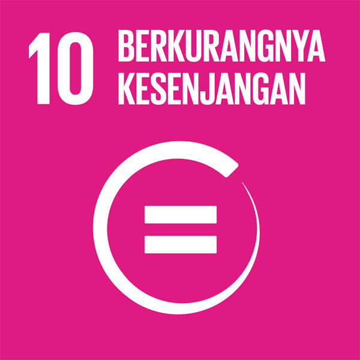

Masalah SDG 10 di Indonesia
Kondisi Terkini

Kondisi Indonesia saat ini terkait dengan SDGs ke-10, yaitu Mengurangi Ketimpangan (Reduced Inequalities) telah menunjukkan kemajuan, walaupun masih memiliki beberapa tantangan yang masih besar. Berdasarkan data BPS Maret 2025, tingkat ketimpangan pendapatan masyarakat Indonesia sedikit menurun dibanding tahun sebelumnya, ini artinya perataan ekonomi mulai membaik. Persentase penduduk miskin juga turun menjadi sekitar 8,47%. Tetapi kesenjangan antarwilayah masih terlihat dengan jelas dan cukup tinggi. Terutama antara desa dan kota serta wilayah barat dan timur Indonesia. Menurut Kementerian PPN/Bappenas, ketimpangan di Indonesia dipengaruhi oleh perbedaan akses terhadap pendidikan, pekerjaan layak, dan layanan dasar. Laporan dari World Bank dan UNDP juga menunjukkan bahwa pekerja sektor informal dan rendahnya keterwakilan perempuan dalam posisi penting seperti di pemerintahan, dapat memperbesar kesenjangan sosial. Pemerintah telah berupaya melalui program perlindungan sosial dan pembangunan yang lebih inklusif, namun pemerataan ekonomi dan kesempatan masih perlu diperkuat agar tujuan SDGs ke-10 dapat tercapai sepenuhnya.Tantangan dan Hambatan
Indonesia masih menghadapi berbagai kesulitan dalam menurunkan ketimpangan ekonomi dan sosial. Dari sisi ekonomi, perbedaan perkembangan wilayah (terutama antara bagian barat dan timur Indonesia) membuat kesempatan kerja yang layak dan pendapatan yang merata belum bisa dinikmati semua masyarakat. Banyaknya pekerja di sektor informal yang tidak memiliki perlindungan kerja juga membuat kesenjangan semakin besar. Dari sisi sosial, masyarakat berpenghasilan rendah masih sulit mendapatkan pendidikan yang baik, layanan kesehatan yang memadai, dan kesempatan untuk meningkatkan taraf hidup. Secara budaya, masih ada pandangan dan kebiasaan yang membatasi peran kelompok tertentu, termasuk perempuan. Sehingga keterlibatan mereka dalam posisi penting seperti di pemerintahan masih rendah. Dari sisi politik, korupsi, ketidakmerataan pembangunan, dan kebijakan yang belum sepenuhnya berpihak pada semua kelompok menjadi hambatan besar dalam mengurangi ketimpangan. Semua faktor ini menunjukkan bahwa meskipun sudah ada kemajuan, Indonesia tetap memerlukan kebijakan yang lebih kuat serta dukungan dari berbagai pihak agar pemerataan ekonomi dan kesempatan dapat tercapai secara lebih adil.
Sumber data: BPS (Gini ratio & persentase penduduk miskin), Bappenas, dan laporan internasional (World Bank, UNDP) untuk konteks pekerja informal dan inklusi gender.